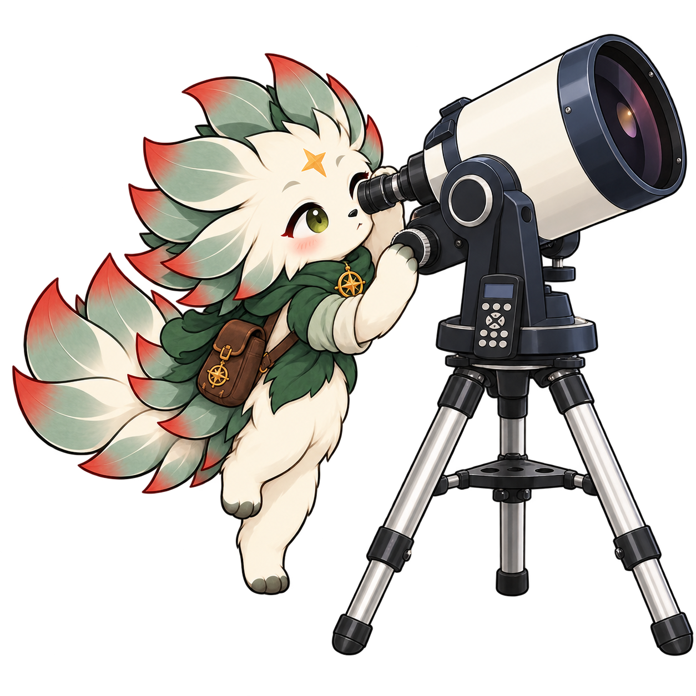
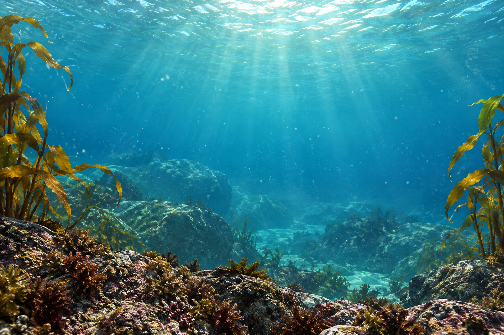
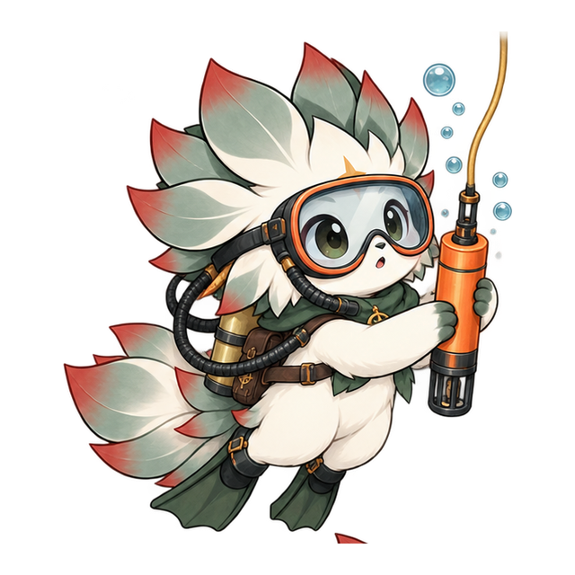
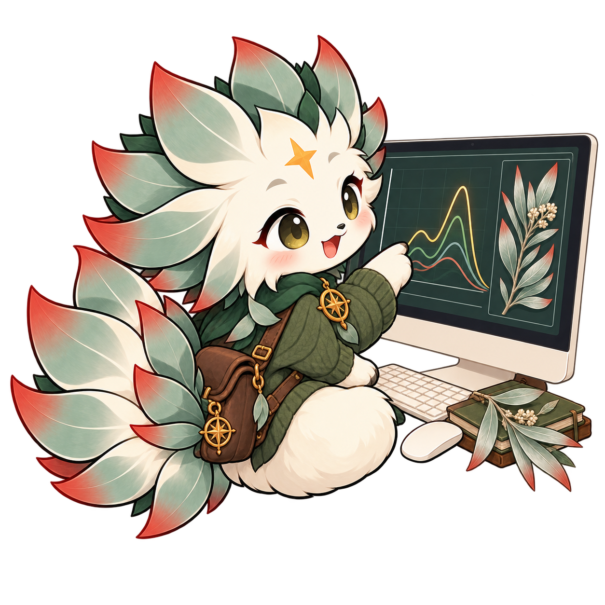

From silvertree canopies to the Benguela Current: biodiversity
monitoring, remote sensing and quantitative ecology.
Dated work appears newest first. Status labels distinguish
completed work, manuscripts under review and published research.

2026
Marine Heatwave Dynamics in the Benguela Current System
An analysis of marine heatwave frequency, intensity, and duration
trends in the Benguela Current upwelling system using 40 years of
NOAA OISST data and the heatwaveR detection framework.
Project details & notebook availability


Phemelo Rutlokoane
Sea Surface Temperature Time Series
File not yet supplied
Building a MHW Climatology
File not yet supplied
Marine Heatwave Analysis
File not yet supplied
Project overview available; full research text has not yet
been added.
2026
Monitoring Leucadendron argenteum populations: exploring
opportunities offered by emerging technologies
My Honours research investigated the accuracy of NASA's
AVIRIS-NG Hyperspectral imagery and LVIS LiDAR in detecting and
mapping Silvertree populations across Table Mountain National
Park.
Project details & notebook availability

Phemelo Rutlokoane, Dr. Patrick O'Farrell & Dr. Ryan
Blanchard
BioSCape Spectral Extraction
File not yet supplied
BioSCape LiDAR Analysis
File not yet supplied
BioSCape Hyperspectral Analysis
File not yet supplied
Project overview available; full research text has not yet
been added.
2025
Biodiversity Monitoring Protocol for Saldanha Bay Municipality
2025–2030
A structured five-year biodiversity monitoring protocol for
Saldanha Bay Municipality, designed to align with the
Kunming-Montreal Global Biodiversity Framework and the SBM Spatial
Development Framework 2025–2030. Covers 12 State-Pressure-Response
indicators, indicator-specific data collection methods, reporting
structures, and institutional governance.